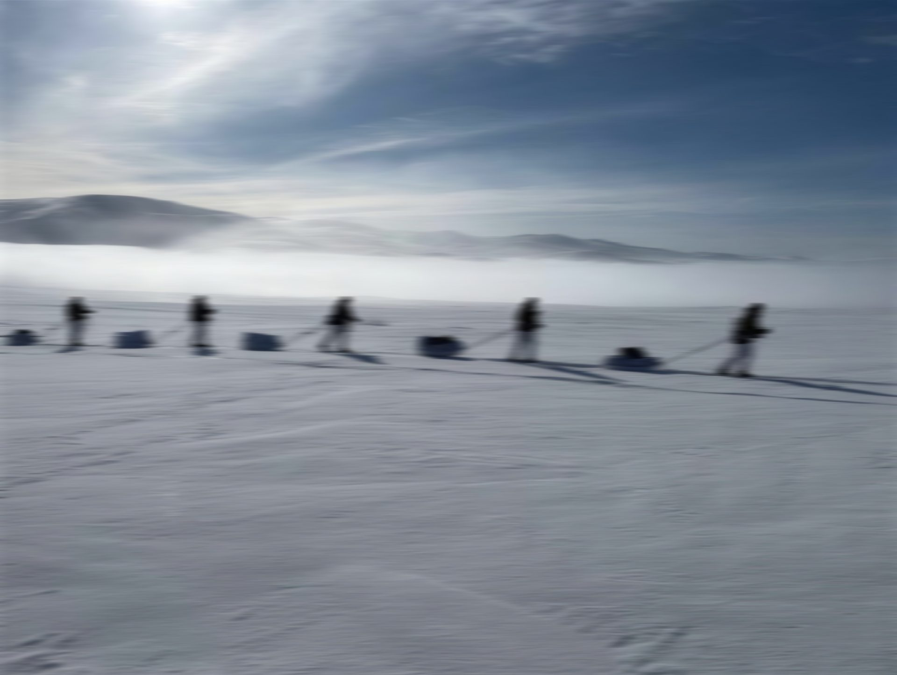

Before it can be measured,
it is often felt
An advisory firm in Oslo for chief executives, chairs and owners
Ole-Henrik Stensrud and Jørn Lager Lyngås
We are an advisory firm in Oslo, working with chief executives, chairs and owners. What people feel about a decision travels through conversations and relationships long before it shows in the numbers.
By then it has already shaped what the company does. We spend time with those people, in person and over time, so that you hear it while something can still be done.
A name from 1817
The name comes from Om religiøse Følelser og deres Værd, a book Hans Nielsen Hauge published in 1817. Hauge was the son of a farmer and walked much of Norway between 1797 and 1804. He talked with people, wrote letters and kept the friendships.
The network that grew from those journeys founded mills, a printing works and trading businesses across the country. Something felt became conversations, then relationships, then enterprises. The same order holds inside a company, and it is the order we work in.
Værd means worth. The small words above each part of this page are Hauge's own: his journeys, his considerations, his letters.
The value of what is hard to measure
What we stand for
Start with the individual
Organisations do not think, feel or act. People do.
Listen before you interpret
What matters is often there before it has words.
Give words to what is felt
What can be named can be looked at together.
Meaning before commitment
People hold on when they understand what they are part of.
Relationships before organisation
Culture is made between people before it shows in structures.
Follow what happens afterwards
The consequence of a conversation can arise far from the room it took place in.
More of the work of companies is now done by software, and more of the thinking is handed to it. The people who know how a decision is actually carried out rarely write that down, so the tools now writing the reports do not know it either. That makes what people know, and have not written down, more valuable. Much of the world is moving toward the machines. We move toward the people.

The partners
One works with the leader, the other in the organisation
Ole-Henrik works one to one with leaders at the top of companies, and in small groups, using mental training. He is one of two people in Norway certified in the Denison diagnostics of organisational culture.
A year as an exchange student in Mississippi is where Jørn's curiosity about people began. He trained in social anthropology at the University of Oslo, where he studied how digital media shape relationships, and holds a master of science in strategic HR from Kristiania University of Applied Sciences. He is an AI research fellow at Sentient Futures in San Francisco, was responsible for HR systems at TOMRA Collection and has been a commercial co-founder of Byteform.
We are based in Oslo, where the firm was founded in 2026, and work in Norway and internationally. We come to you.
Every assignment begins with a conversation
Write to either of us. If one of us has written to you, a reply to that message is enough.
A first conversation takes thirty minutes of your time and costs nothing. It ends with our view of what you are dealing with, in writing, within the week.